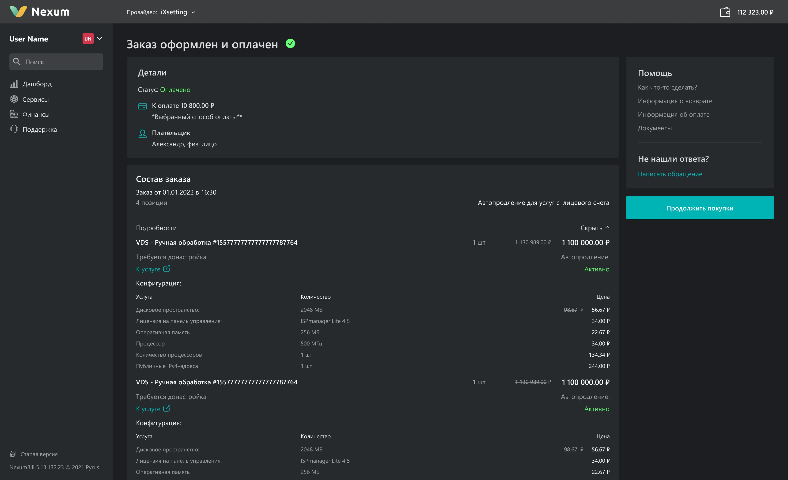
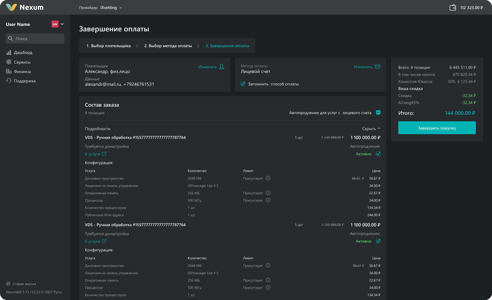
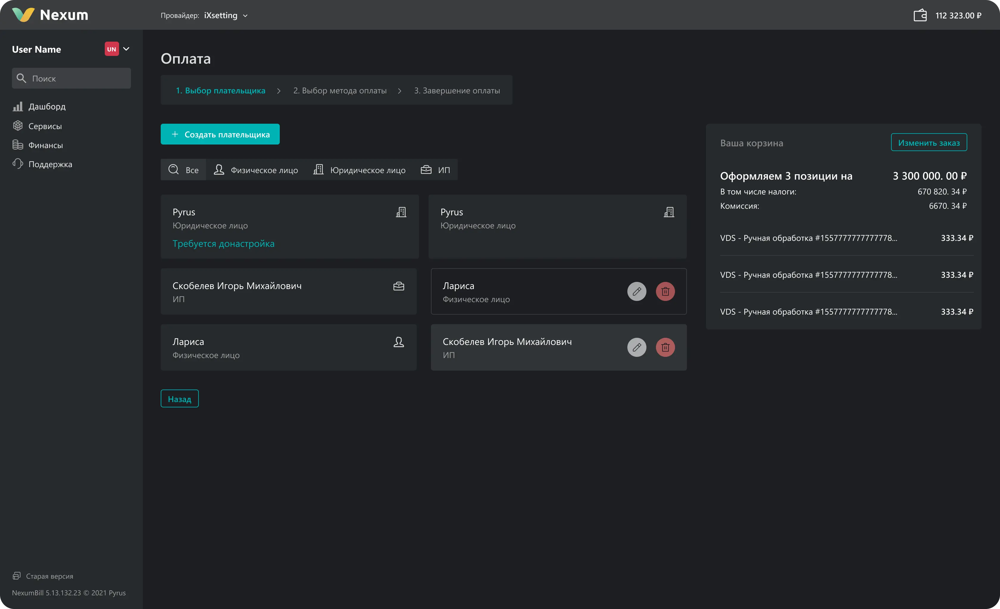
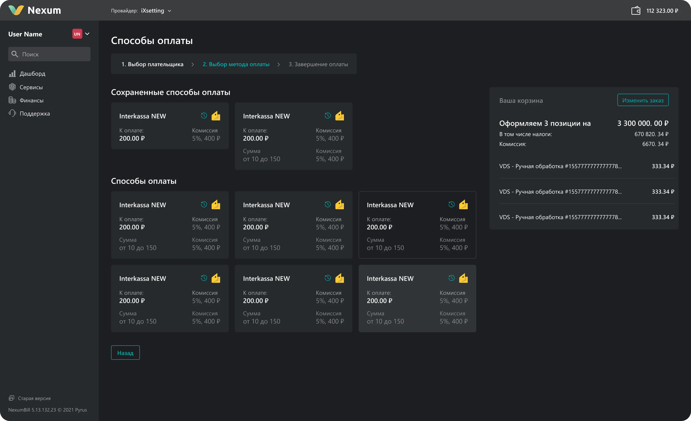

Задача
Переработать весь путь оплаты — от корзины до подтверждения чека. Учесть ограничения white‑label продукта: интерфейс кастомизируют клиенты под свой бренд, бекенд работает на табличных структурах, в систему подключено 20+ платёжных шлюзов.
Контекст
Платформа — white‑label решение для автоматизации продаж IT‑услуг и управления подписками. На одном коде работают сотни компаний в десятках стран. Корзина общая для всех — любая ошибка в ней масштабируется на тысячи конечных пользователей.
Проблема
Воронка оплаты состояла из 7 шагов без чёткой логики. Кнопка «Оплатить» уходила в скролл, конфигурация услуги занимала 20+ строк нечитаемого текста, а после оплаты пользователя выбрасывало на дашборд без статуса — купил или нет, непонятно.
Исследование
Прошёл весь путь от корзины до чека, зафиксировал точки трения. Провёл глубинные интервью и два этапа коридорных тестирований. Главное ограничение: бекенд трактует корзину как таблицу, а клиенты кастомизируют интерфейс через маркдаун и настройки админки.
Ключевой инсайт
Каждый лишний шаг — точка выхода из воронки. Пользователь не читает конфигурацию в корзине — он перепроверяет. А экран подтверждения плательщика, который открывался отдельно, просто отделял от главного — перехода к оплате.
- Сокращение шагов напрямую снижает отток: меньше экранов — меньше моментов передумать
- Вторичные данные не должны конкурировать с целевым действием — их можно свернуть
Решение
Переосмыслил архитектуру воронки: 7 шагов стали 3. Итоги зафиксированы на экране, конфигурация убрана в раскрывающийся блок, выбор плательщика и подтверждение объединены.
Корзина
Итоговая стоимость и кнопка оплаты зафиксированы справа — видны всегда, независимо от количества услуг. Конфигурация услуги переведена в таблицу и спрятана в аккордеон. Добавлены чекбоксы для частичной оплаты с пересчётом суммы.


Чекаут и выбор плательщика
Два экрана — список плательщиков и форма подтверждения — объединены в один. Данные развёрнуты прямо в карточке, добавлен фильтр. Один лишний экран убран — одна точка выхода меньше.
Итерация по фидбеку
Первая версия с карточками методов оплаты не прошла коридорное тестирование — пользователи ожидали список. Собрал фидбек через Customer Feedback, переделал. Итерация заняла один спринт.

Подтверждение оплаты
Раньше после оплаты пользователь попадал на дашборд без объяснений. Спроектировал экран подтверждения: статус платежа, информация об услуге, обработка ошибок. Закрыл системную проблему, которой раньше не было решения.

Результат
- White‑label продукт: одно улучшение воронки масштабируется на 190+ компаний в 100+ странах и тысячи их конечных пользователей. Каждый сокращённый шаг — меньше оттока для всей клиентской базы.
- Два этапа коридорных исследований — на концепте и на финальном флоу. Первый выявил проблему с карточками метода оплаты, второй подтвердил, что переработанная версия проходит без трения.
- Задача пришла как «сделай красиво», а превратилась в переработку всей воронки оплаты через исследования, 2 раунда тестирования и итерации по фидбеку. Фича вышла в релиз вместе с тремя другими крупными задачами и обновила визуал продукта.
Часть деталей продукта закрыта NDA. Если хочется обсудить кейс подробнее — напишите мне.